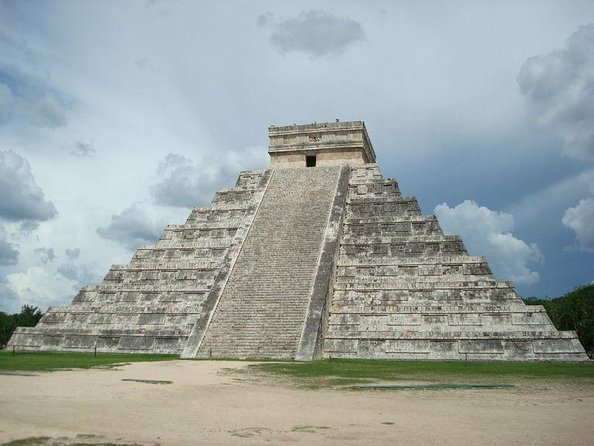

Chichen Itza
Timun, Yucatán
Chichén Itzá (del maya yucateco: Chiꞌ Chꞌeꞌen Its Jaꞌ
‘Boca del pozo de los brujos del agua’) es uno de los principales sitios
arqueológicos mayas de la península de Yucatán, en México.
Se encuentra a escasos 2.5 km de la localidad de Pisté, en el municipio de Tinum,
en el estado de Yucatán, al sureste del país.
Consistió en una ciudad o un centro ceremonial que pasó por diversas épocas constructivas e
influencias de los distintos pueblos que la ocuparon y que la impulsaron desde su fundación.
Costo por accesso: Si